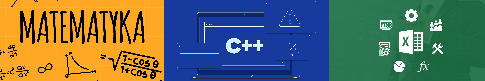

Witaj!
Nazywam się Aleks Szkarpietin i jestem studentem II roku kierunku Ekonomia na specjalizacji Informatyka i Ekonometria na Uniwersytecie Warszawskim. Na codzień studiuję dziennie, pracuję oraz prowadzę korepetycje z matematyki na poziomie podstawowym szkoły średniej i niższym. Oferuję także pomoc w programowaniu w języku C++ oraz obsługi arkusza kalkulacyjnego na poziomie szkoły średniej.
Jeżeli potrzebujesz pomocy z zadaniem domowym, bieżącym materiałem, zaległościami, czy po prostu przygotowujesz się do egzaminu, dobrze trafiłeś - zajżyj do zakładki "Korepetycje".
